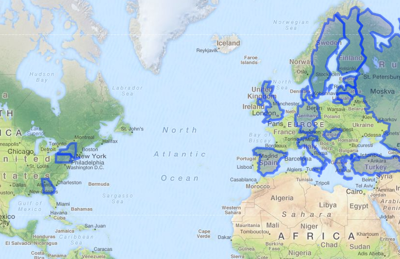

Project: visited destinations on a map
I love to travel, and have tried to visit at least a couple of destinations each year.
Yesterday for fun I prototyped an interactive map that shows the destinations I’ve been to:

It helps to have a tool with which you can pan+zoom and visually see the places you have yet to visit.

Thanks for reading! 😍
If you like my writing, consider following me on Twitter.
Stay updated on my blog posts & projects - sign up for
my newsletter. 🚀
No spam, unsubscribe any time.
RSS also available.